NCERT Solutions Class 9 Science Chapter 9 Force and Laws of Motion – Here are all the NCERT solutions for Class 9 Science Chapter 9. This solution contains questions, answers, images, step by step explanations of the complete Chapter 9 titled Force and Laws of Motion of Science taught in class 9. If you are a student of class 9 who is using NCERT Textbook to study Science, then you must come across Chapter 9 Force and Laws of Motion. After you have studied lesson, you must be looking for answers of its questions. Here you can get complete NCERT Solutions for Class 9 Science Chapter 9 Force and Laws of Motion in one place. For a better understanding of this chapter, you should also see Chapter 9 Force and Laws of Motion Class 9 notes , Science.
NCERT Solutions for Class 9 Science Chapter 9 Force and Laws of Motion
Topics and Sub Topics in Class 9 Science Chapter 9 Force and Laws of Motion:
- Force and Laws of Motion
- Balanced and Unbalanced Forces
- First Law of Motion
- Inertia and Mass
- Second Law of Motion
- Third Law of Motion
- Conservation of Momentum
These solutions are part of NCERT Solutions for Class 9 Science. Here we have given Class 9 NCERT Science Text book Solutions for Chapter 9 Force and Laws of Motion.
In-Text Questions Solved
NCERT Textbook for Class 9 Science – Page 118
Question 1. Which of the following has more inertia:
(a) a rubber ball and a stone of the same size?
(b) a bicycle and a train?
(c) a five-rupees coin and a one-rupee coin?
Answer:
(a) A stone of the same size
(b) a train
(c) a five-rupees coin
As the mass of an object is a measure of its inertia, objects with more mass have more inertia.
More Resources for CBSE Class 9
- NCERT Solutions
- NCERT Solutions Class 9 Maths
- NCERT Solutions Class 9 Social Science
- NCERT Solutions Class 9 English
- NCERT Solutions Class 9 Hindi
- NCERT Solutions Class 9 Sanskrit
- NCERT Solutions Class 9 IT
- RD Sharma Class 9 Solutions
Question 2. In the following example, try to identify the number of times the velocity of the ball changes.
“A football player kicks a football to another player of his team who kicks the football towards the goal The goalkeeper of the opposite team collects the football and kicks it towards a player of his own team”.
Also identify the agent supplying the force in each case.
Answer:
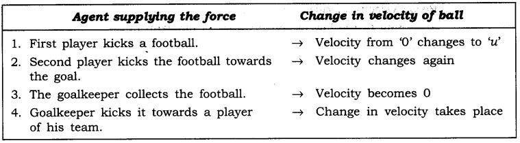
The velocity of football changed four times.
Formulae Handbook for Class 9 Maths and ScienceEducational Loans in India
Question 3. Explain why some of the leaves may get detached from a tree if we vigorously shake its branch.
Answer: When the tree’s branch is shaken vigorously the branch attain motion but the leaves stay at rest. Due to the inertia of rest, the leaves tend to remain in its position and hence detaches from the tree to fall down.
Question 4. Why do you fall in the forward direction when a moving bus brakes to a stop and fall backwards when it accelerates from rest?
Answer: When a moving bus brakes-to a stop: When the bus is moving, our body is also in motion, but due to sudden brakes, the lower part of our body comes to rest as soon as the bus stops. But the upper part of our body continues to be in motion and hence we fall in forward direction due to inertia of motion.
When the bus accelerates from rest we fall backwards: When the bus’ is stationary our body is at rest but when the bus accelerates, the lower part of our body being in contact with the floor of the bus comes in motion, but the upper part of our body remains at rest due to inertia of rest. Hence we fall in backward direction.
Class 9 Science NCERT Textbook – Page 126-127
Question 1. If action is always equal to the reaction, explain how a horse can pud a cart?
Answer: The third law of motion states that action is always equal to the reaction but they act on two different bodies.
In this case the horse exerts a force on the ground with its feet while walking, the ground exerts an equal and opposite force on the feet of the horse, which enables the horse to move forward and the cart is pulled by the horse.
Question 2. Explain, why is it difficult for a fireman to hold a hose, which ejects a large amount of water at a high velocity.
Answer: The water that is ejected out from the hose in the forward direction comes out with a large momentum and equal amount of momentum is developed in the hose in the opposite direction and hence the hose is pushed backward. It becomes difficult for a fireman to hold a hose which experiences this large momentum.
Question 3. From a rifle of mass 4 kg, a bullet of mass 50 g is fired with an initial velocity of 35 m/s. Calculate the initial recoil velocity of the rifle.
Answer:
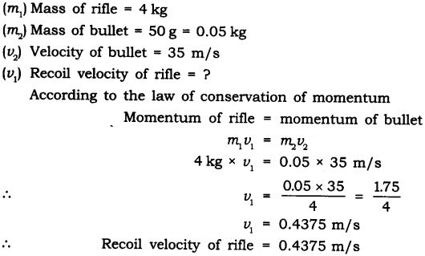
Question 4. Two objects of masses 100 g and 200 g are moving along the same line and direction with velocities of 2 m/s and 1 m/s respectively.
They collide and after the collision the first object moves at a velocity of 1.67 m./s. Determine the velocity of the second object.
Answer:
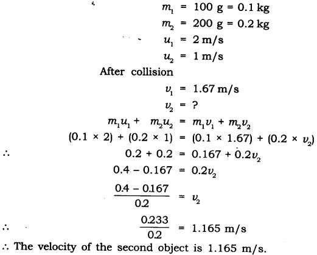
NCERT Solutions for Class 9 Science Chapter 9 Force and Laws of Motion (Hindi Medium)
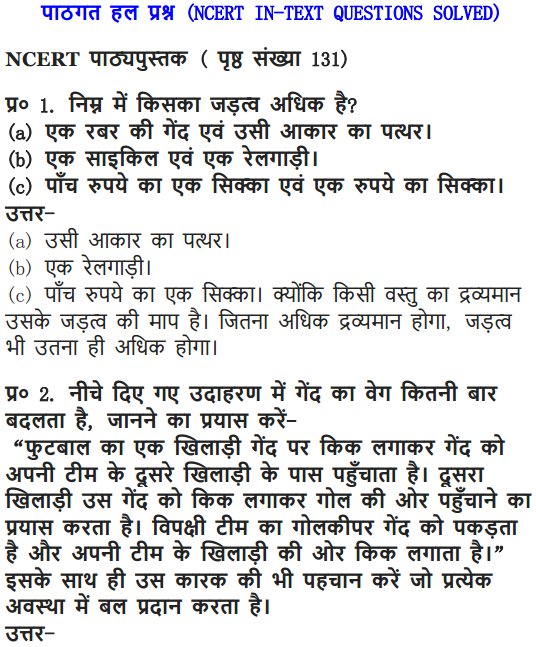
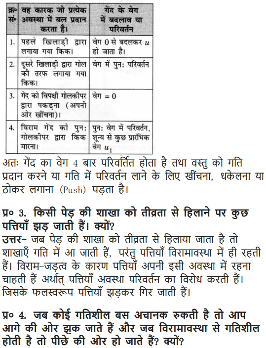
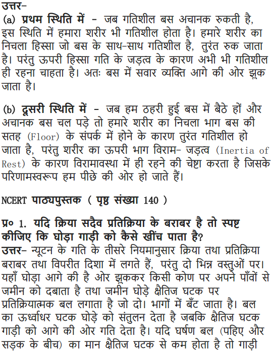
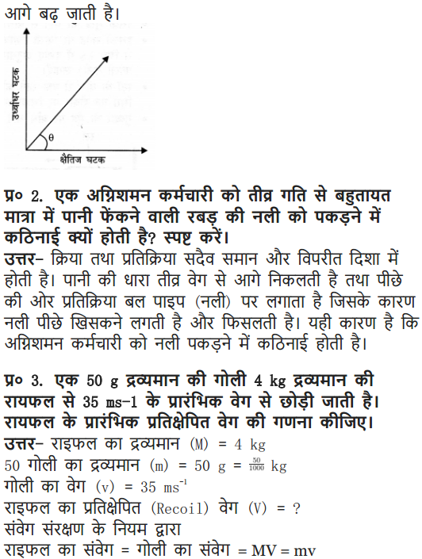
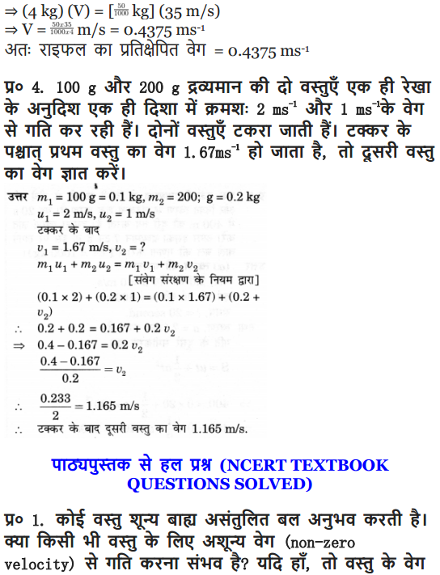
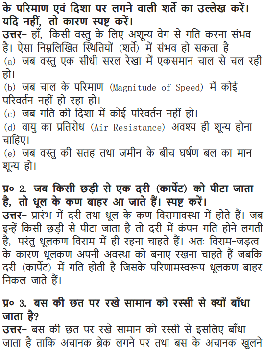
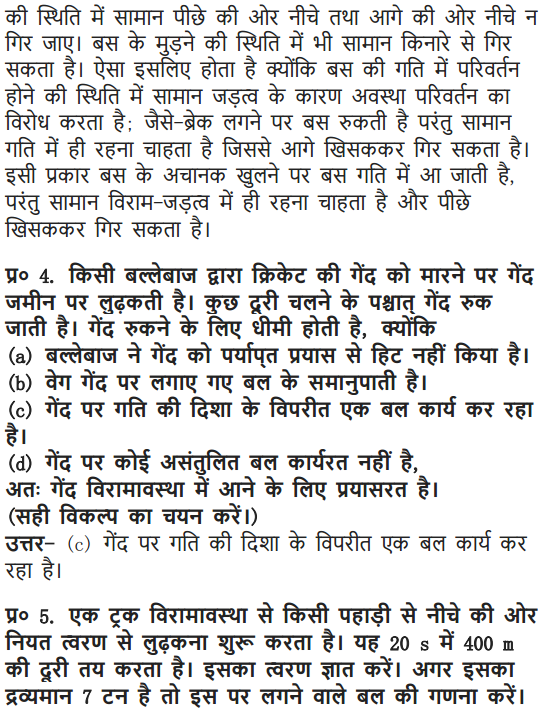
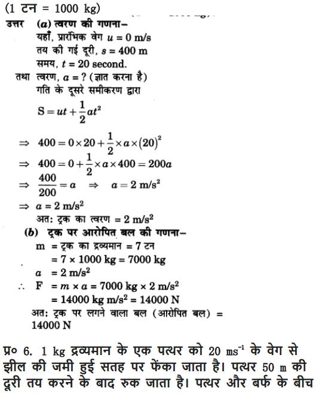
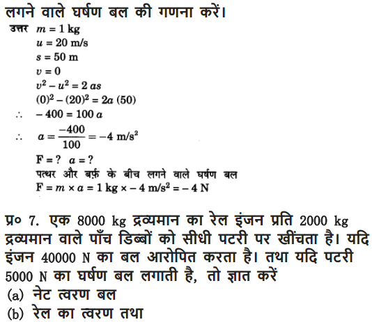
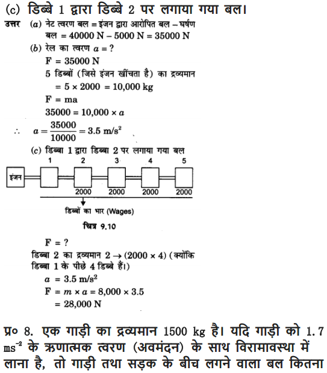
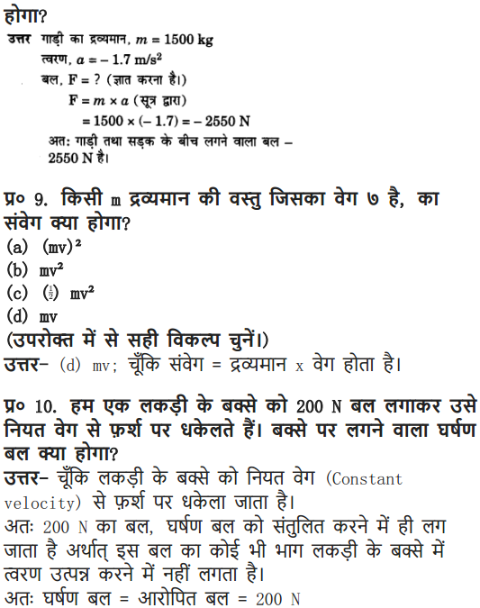
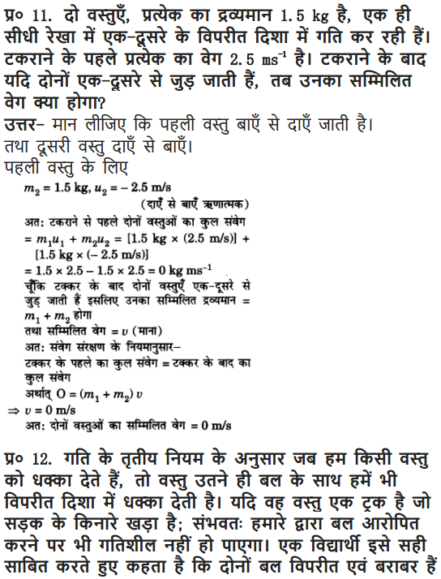
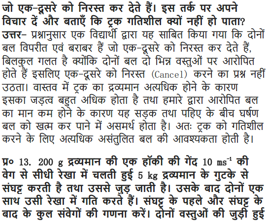
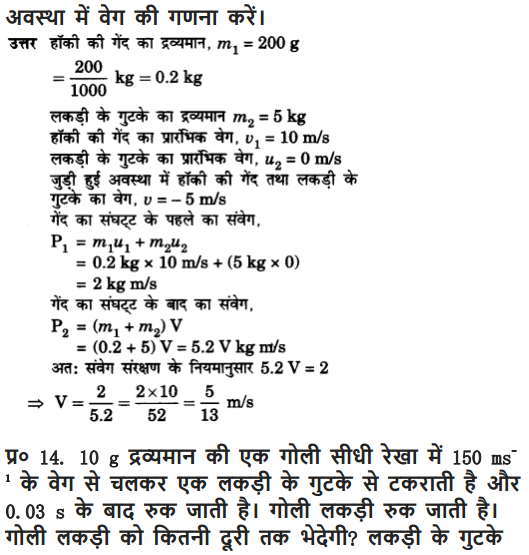
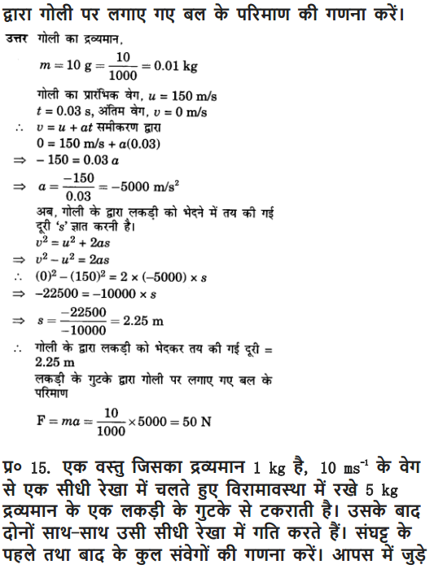
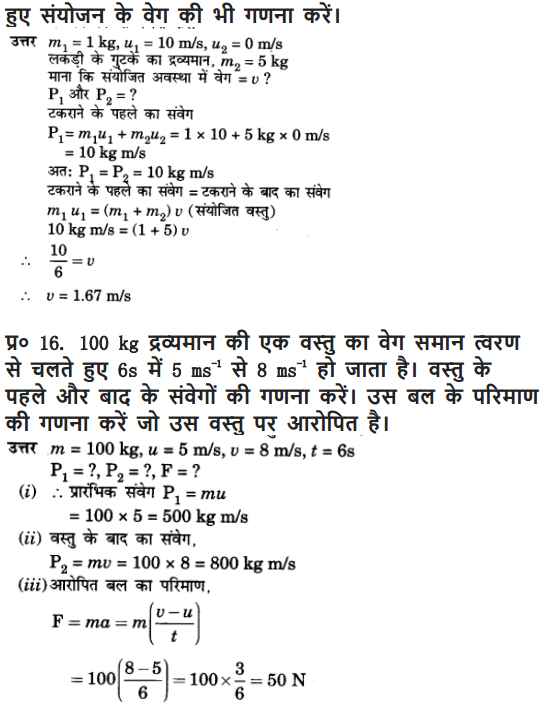
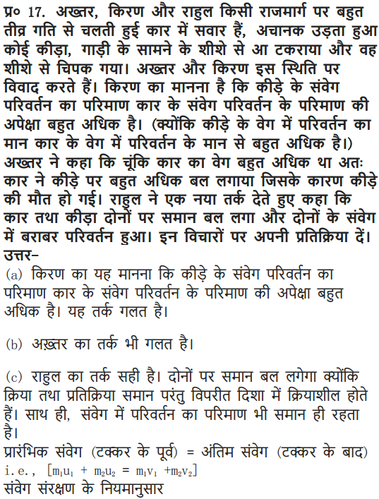
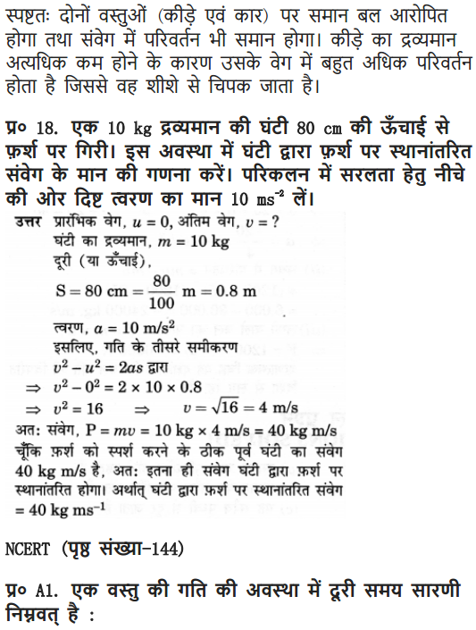
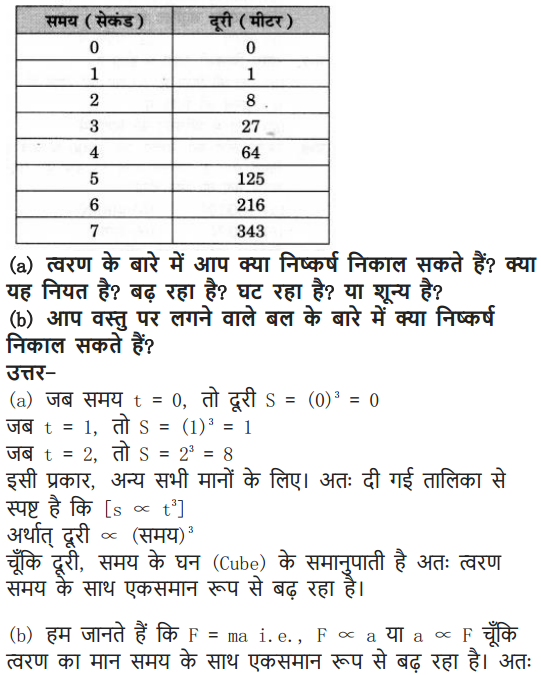
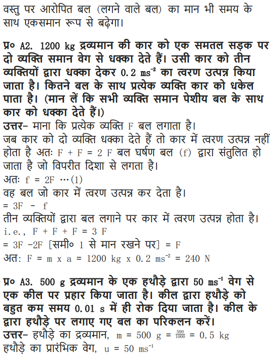
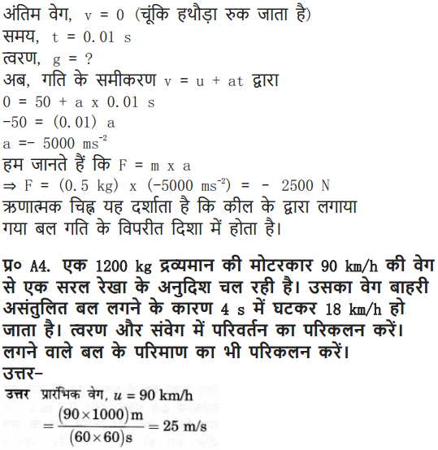
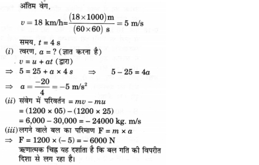
Extra Questions from NCERT Textbook for Class 9 Science
Question 1. An object experiences a net zero external unbalanced force. Is it possible for the object to be travelling with a non-zero velocity? If yes, state the conditions that must be placed on the magnitude and direction of the velocity. If no, provide a reason.
Answer: When an object experiences a net zero external unbalanced force, in accordance with second law of motion its acceleration is zero. If the object was initially in a state of motion, then in accordance with the first law of motion, the object will continue to move in same direction with same speed. It means that the object may be travelling with a non-zero velocity but the magnitude as well as direction of velocity must remain unchanged or constant throughout.
Question 2. When a carpet is beaten with a stick, dust comes out of it. Explain.
Answer: The carpet with dust is in state of rest. When it is beaten with a stick the carpet is set in motion, but the dust particles remain at rest. Due to inertia of rest the dust particles retain their position of rest and falls down due to gravity.
Question 3. Why is it advised to tie any luggage kept on the roof of a bus with a rope?
Answer: In moving vehicle like bus, the motion is not uniform, the speed of vehicle varies and it may apply brake suddenly or takes sudden turn. The luggage will resist any change in its state of rest or motion, due to inertia and this luggage has the tendency to fall sideways, forward or backward.
To avoid the fall of the luggage, it is tied with the rope.
Question 4. A batsman hits a cricket ball which then rolls on a level ground. After covering a short distance, the ball comes to rest. The ball slows to a stop because
(a) the batsman did not hit the ball hard enough.
(b) velocity is proportional to the force exerted on the ball.
(c) there is a force on the ball opposing the motion.
(d) there is no unbalanced force on the ball, so the ball would want to come to rest.
Answer: (c) there is a force 6n the ball opposing the motion.
Question 5. A truck starts from rest and rolls down a hill with a constant acceleration. It travels a distance of 400 m in 20 s. Find its acceleration. Find the force acting on it if its mass is 7 tonnes (Hint : 1 tonne = 1000 kg).
Answer:
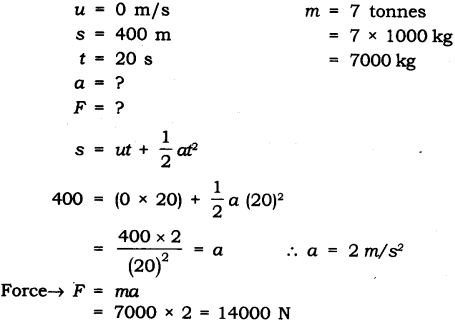
Question 6. A stone of lkg is thrown with a velocity of 20 ms~1 across the frozen surface of a lake and comes to rest after travelling a distance of 50 m. What is the force of friction between the stone and the ice?
Answer:
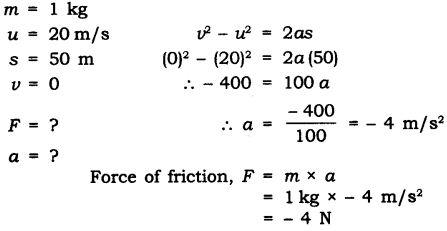
Question 7. 40000 kg engine pulls a train of 5 wagons, each of 2000 kg, along a horizontal track. If the engine exerts a force of 40000 N and the track offers a friction force of 5000 N, then calculate:
Answer:
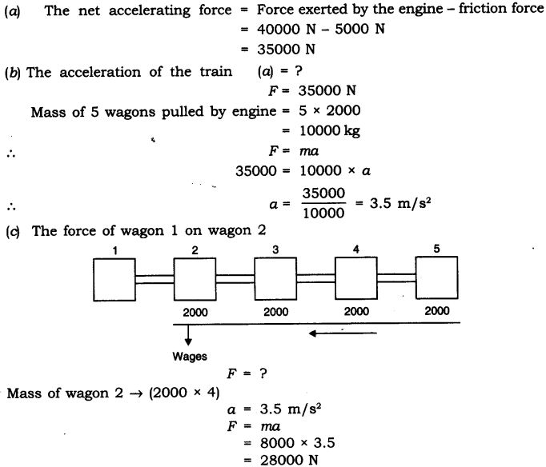
Question 8. An automobile vehicle has a mass of 1500 kg. What must be the force between the vehicle and road if the vehicle is to be stopped with a negative acceleration of 1.7 ms-2?
Answer:
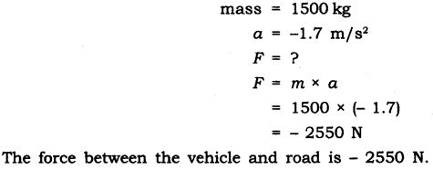
Question 9.What is the momentum of an object of mass m, moving with a velocity v?.
(a) (mv)2 (b) mv2 (c) 1/2 mv2 (d) mv
Answer: (d) mv
Question 10.Using a horizontal force of 200 N, we intend to move a wooden cabinet across a floor at a constant velocity. What is the friction force that will be exerted on the cabinet?
Answer:
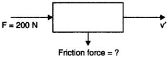
As the wooden cabinet moves across the floor at a constant velocity and the force applied is 200 N. Hence the frictional force that will be exerted on the cabinet will be less than 200 N.
Question 11.Two objects each of mass 1.5 kg, are moving in the same straight line but in opposite directions. The velocity of each object is 2.5 ms-1 before the collision during which they stick together. What will be the velocity of the combined object after collision?
Answer:
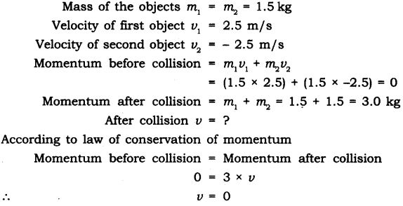
Question 12. According to the third law of motion when we push on an object, the object pushes back on us with an equal and opposite force. If the object is a massive truck parked along the roadside, it will probably not move. A student justifies this by answering that the two opposite and equal forces cancel each other. Comment on this logic and explain why the truck does not move.
Answer: The mass of truck is too large and hence its inertia is too high. The small force exerted on the truck cannot move it and the truck remains at rest. For the truck to attain motion, an external large amount of unbalanced force need to be exerted on it.
Question 13. A hockey ball of mass 200 g travelling at 10 ms-1 is struck by a hockey stick so as to return it along its original path with a velocity at 5 ms-1. Calculate the change of momentum occurred in the motion of the hockey ball by the force applied by the hockey stick.
Answer:
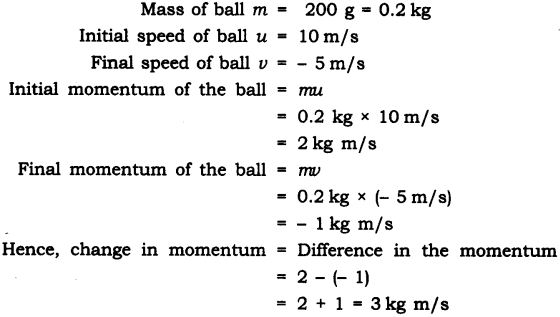
Question 14. A bullet of mass 10 p travelling horizontally with a velocity of 150 m-1 strikes a stationary wooden block and comes to rest in 0.03 s. Calculate the distance of penetration of the bullet into the block. Also calculate the magnitude of the force exerted by the wooden block on the bullet.
Answer:
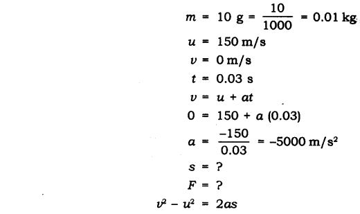
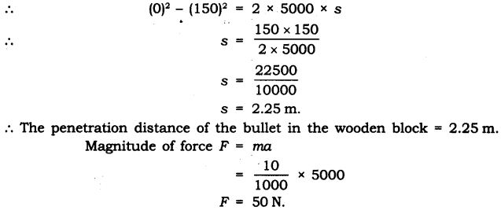
Question 15. An object of mass 1 kg travelling in a straight line with a velocity of 10 ms-1 collides with, and sticks to, a stationary wooden block of mass 5 kg. Then they both move off together in the same straight line. Calculate the total momentum just before the impact and just after the before the impact and just after the impact. Also, calculate the velocity of the combined object.
Answer:

Question 16. An object of mass 100 kg is accelerated uniformly from a velocity of 5 ms-1 to 8 ms-1 in 6 s. Calculate the initial and final momentum of the object. Also, find the magnitude of the force exerted on the object.
Answer:
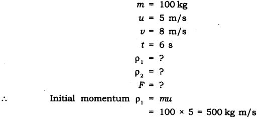
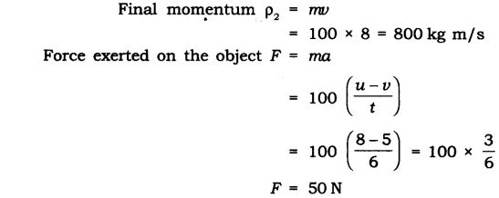
Question 17. Akhtar, Kiran and Rahul were riding in a motorcar that was moving with a high velocity on an expressway when an insect hit the windshield and got stuck on the windscreen. Akhtar and Kiran started pondering over the situation. Kiran suggested that the insect suffered a greater change in momentum as compared to the change in momentum of the motorcar (because the change in the velocity of insect was much more than that of the motorcar). Akhtar said that since the motorcar was moving with a larger velocity, it exerted a larger force on the insect. And as a result the insect died. Rahul while putting an entirely new explanation said that both the motorcar and the insect experienced the same force and a change in their momentum. Comment on these suggestions.
Answer: Rahul gave the correct reasoning and explanation that both the motorcar and the insect experienced the same force and a change in their momentum. As per the law of conservation of momentum.
When 2 bodies collide:
Initial momentum before collision = Final momentum after collision
m1 u1+ m2 u2 = m1 v1+ m2 v2
The equal force is exerted on both the bodies but, because the mass of insect is very small it will suffer greater change in velocity.
Question 18. How much momentum will a dumb-bell of mass 10 kg transfer to the floor if it falls from a height of 80 cm? Take its downward acceleration to be 10 ms-2.
Answer:
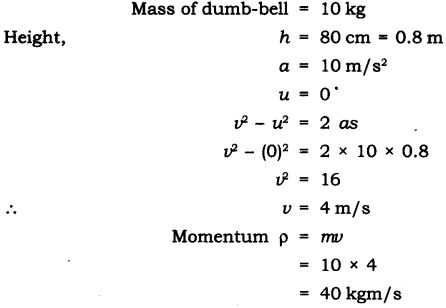
Additional Exercises
Question 1. The following is the distance-time table on an object in motion:
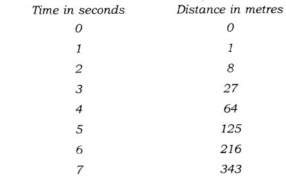
(a) What conclusion can you draw about the acceleration? Is it constant, increasing, decreasing, or zero?
(b) What do you infer about the forces acting on the object?
Answer: As per given table initial speed of the object is zero. Applying the relation
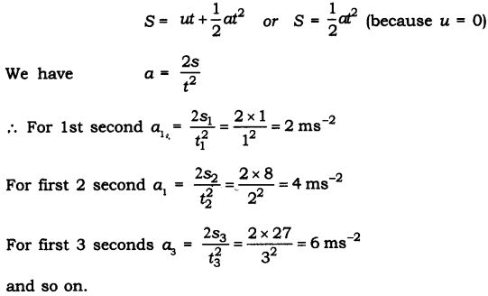
Question 2. Two persons manage to push a motorcar of mass 1200 kg at a uniform velocity along a level road. The same motorcar can be pushed by three persons to produce an acceleration of 0.2 ms-2. With what force does each person push the motorcar? (Assume that all persons push the motorcar with the same muscular effort.)
Answer: Let each person applies a force F on a motorcar of mass, m = 1200 kg.
When two persons push the car, they just manage to move it at a uniform velocity. It means that their combined force 2F is just balanced by force of friction due to road and car moves with a uniform velocity.
When three persons push the car, they apply a total force 3F on the car.
Now net unbalanced force’ on the car = force applied by three persons – frictional force
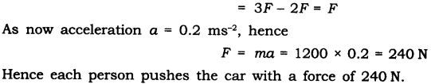
Question 3. A hammer of mass 500 g, moving at 50 ms-1, strikes a nail. The nail stops the hammer in a very short time of 0.01 s. What is the force of the nail on the hammer?
Answer:
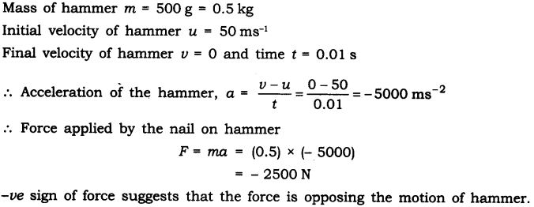
Question 4. A motorcar of mass 1200 kg is moving along a straight line with a uniform velocity of 90 km/h. Its velocity is slowed down to 18 km/h in 4 s by an unbalanced external force. Calculate the acceleration and change in momentum. Also calculate the magnitude of the force required.
Answer:
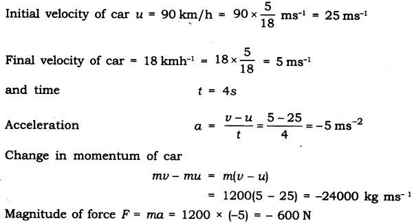
-ve sign of acceleration, charge in momentum and force suggests that the force is opposing the motion of motor car.
Question 5. A large truck and a car, both moving with a velocity of magnitude v, have a head- on collision and both of them come to a halt after that. If the collision lasts for 1 s:
(a) Which vehicle experiences the greater force of impact?
(b) Which vehicle experiences the greater change in momentum?
(c) Which vehicle experiences the greater acceleration?
(d) Why is the car likely to suffer more damage than the truck?
Answer:
(a) During head on collision forces applied by truck and car are action-reaction forces. Hence both vehicles experience same (equal) force of impact.
(b) Here initial velocity of both car and truck is same equal to v and final velocity of both is zero. But mass of truck is much more than that of car, hence change in momentum of truck is more than change in momentum of car.
(c) For same force of impact, the acceleration of car will have greater magnitude because its mass is less.
(d) Car suffers more damage than the truck, as acceleration of car is more, its velocity falls to zero in a shorter time and consequently, its momentum changes in a shorter time.
More Questions Solved
NCERT Solutions for Class 9 Science Chapter 9 Multiple Choice Questions
Choose the correct option:
1. The S.I. unit of force is
(a) kgm/s (b) kgm/s2
(c) Newton ( (d) Newton-meter
2. The product of mass and velocity gives a physical quantity
(a) force (b) inertia
(c) momentum (d) Newton
3. The rate of change of momentum of an object is proportional to
(a) mass of the body (b) velocity of the body
(c) net force applied on the body (d) none of these .
4. If two balls of different masses are dropped on sand, the depths of penetration is same if:
(a) heavier ball is dropped faster than lighter ball
(b) lighter ball is dropped faster than heavier ball
(c) the product ‘mi/ is same for both bodies
(d) none of these
5. The coin remains at rest in the figure shown. This is due to
(a) inertia of rest
(b) two forces act on the coin which balance each other
(c) no unbalanced force acts on it
(d) all of these
6. A force of 50 N moves a body.
(a) Frictional force exerted on the body is less than 50 N
(b) Frictional force exerted on the body is more than 50 N
(c) None of these
(d) Both (a) and (b)
7. Fielder giving a swing while catching a ball is an example of
(a) inertia (b) momentum
(c) Newton’s II law of motion (d) Newton’s I law of motion
8. Action and reaction forces
(a) acts on same body (b) act on different bodies
(c) act in same direction (d) both (a) and (c)
9. When we stop pedaling the bicycle it stops because
(a) the earths gravitational force acts on it
(b) it is not accelerated
(c) no unbalanced force acts on it
(d) frictional force acts on it
10. A football and a stone has same mass
(a) both have same inertia (b) both have same momentum
(c) both have different inertia (d) both have different momentum
Answer. 1—(c), 2—(c), 3—(c), 4-(c), 5-(d), 6-(a), 7-(c), 8-(b), 9-(d), 10-(a).
NCERT Solutions for Class 9 Science Chapter 9 Very Short Answer Type Questions
Question 1. Define force.
Answer: It is a push or pull on an object that produces acceleration in the body on which it acts. 4
Question 2. What is S.I. unit of force?
Answer: S.I. unit of force is Newton.
Question 3. Define one Newton.
Answer: A force of one Newton produces an acceleration of 1 m/s2 on an object of mass 1 kg. .
1 N = 1 kg m/s2
Question 4. What is balanced force?
Answer: When forces acting on a body from the opposite direction do not change the state of rest or of motion of an object, such forces are called balanced forces.
Question 5. What is frictional force?
Answer: The force that always opposes the motion of object is called force of friction.
Question 6. What is inertia?
Answer: The natural tendency of an object to resist a change in their state of rest or of uniform motion is called inertia.
Question 7. State Newton’s first law of motion.
Answer: An object remains in a state of rest or of uniform motion in a straight line unless acted upon by an external unbalanced force.
Question 8. State Newton’s second law of motion.
Answer: The rate of change of momentum of an object is proportional to the applied unbalanced force in the direction of the force.
Question 9. What is momentum?
Answer: The momentum of an object is the product of its mass and velocity and has the same direction as that of the velocity. The S. I. unit is kg m/s. (p = mv)
Question 10. State Newton’s III law of motion.
Answer: To every action, there is an equal and opposite reaction and they act on two different bodies.
Question 11. Which will have more inertia a body of mass 10 kg or a body of mass 20 kg?
Answer: A body of mass 20 kg will have more inertia.
Question 12. Name the factor on which the inertia of the body depends.
Answer: Inertia of a body depends upon the mass of the body.
Question 13. Name two factors which determine the momentum of a body.
Answer: Two factors on which momentum of a body depend is mass and velocity. Momentum is directly proportional to the mass and velocity of the body.
Question 14. What decides the rate of change of momentum of an object?
Answer: The rate of change of momentum of an object is proportional to the applied unbalanced force in the direction of force.
Question 15. The diagram shows a moving truck. Forces A, B,
C and D are acting on the truck.
Name the type of forces acting on a truck.
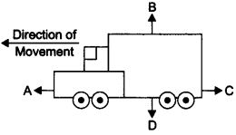
Answer: The forces A, B, C and D acting on the truck are:
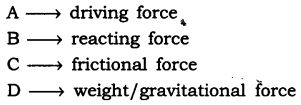
NCERT Solutions for Class 9 Science Chapter 9 Short Answer Type Questions
Question 1. State the difference in balanced and unbalanced force.
Answer:
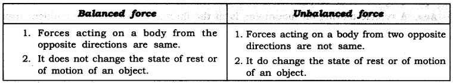
Question 2. What change will force bring in a body?
Answer: Force can bring following changes in the body:
- It can change the speed of a body.
- It can change the direction of motion of a body,
- It can change the shape of the body.
Question 3. When a motorcar makes a sharp turn at a high speed, we tend to get thrown to one side. Explain why?
Answer: It is due to law of inertia. When we are sitting in car moving in straight line, we tend to continue in our straight-line motion. But when an unbalanced force is applied by the engine to change the direction of motion of the motorcar. We slip to one side of the seat due to the inertia of our body.
Question 4. Explain why it is dangerous to jump out of a moving bus.
Answer: While moving in a bus our body is in motion. On jumping out of a moving bus our feet touches the ground and come to rest. While the upper part of our body stays in motion and moves forward due to inertia of motion and hence we can fall in forward direction.
Hence, to avoid this we need to run forward in the direction of bus.
Question 5. Why do fielders pull their hand gradually with the moving ball while holding a catch?
Answer: While catching a. fast moving cricket ball, a fielder on the ground gradually pulls his hands backwards with the moving ball. This is done so that the fielder increases the time during which the high velocity of the moving ball decreases to zero. Thus, the acceleration of the ball is decreased and therefore the impact of catching the fast moving ball is reduced.
Question 6. In a high jump athletic event, why are athletes made to fall either on a cushioned bed or on a sand bed?
Answer: In a high jump athletic event, athletes are made to fall either on a cushioned bed or on a sand bed so as to increase the time of the athlete’s fall to stop after making the jump. This decreases the rate of change of momentum and hence the force.
Question 7. How does a karate player breaks a slab of ice with a single blow?
Answer: A karate player applied the blow with large velocity in a very short interval of time on the ice slab which therefore exerts large amount of force on it and suddenly breaks the ice slab.
Question 8. What is law of conservation of momentum?
Answer: Momentum of two bodies before collision is equal to the momentum after collision.
In an isolated system, the total momentum remain conserved.
Question 9. Why are roads on mountains inclined inwards at turns?
Answer: A vehicle moving on mountains is in the inertia of motion. At a sudden turn there is a tendency of vehicle to fall off the road due to sudden change in the line of motion hence the roads are inclined inwards so that the vehicle does not fall down the mountain.
Question 10. For an athletic races why do athletes have a special posture with their right foot resting on a solid supporter?
Answer: Athletes have to run the heats and they rest their foot on a solid supports before start so that during the start of the race the athlete pushes the support with lot of force and this support gives him equal and opposite push to start the race and get a good start to compete for the race.
Question 11.Why do you think it is necessary to fasten your seat belts while travelling in your vehicle?
Or
How are safety belts helpful in preventing any accidents?
Answer: While we are travelling in a moving car, our body remains in the state of rest with respect to the seat. But when driver applies sudden breaks or stops the car our body tends to continue in the same state of motion because of its inertia. Therefore, this sudden break may cause injury to us by impact or collision. Hence, safety belt exerts a force on our body to make the forward motion slower.
Question 12. Explain how momentum gets conserved in collision of two bodies.
Answer: Consider two bodies i.e., balls A and B, the mass and initial velocities are mAuA and mBuB respectively before collision. The two bodies collide and force is exerted by each body. There is change in their velocities due to collision.
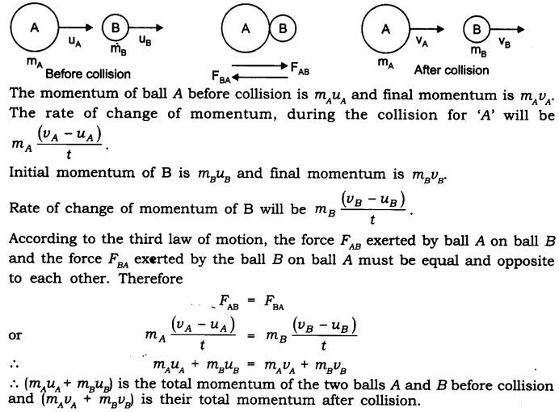
∴ The total momentum of the two balls remains unchanged or conserved provided no other external force acts.
Question 13. When you kick a football it flies away but when you kick a stone you get huh why?
Answer: This is because stone is heavier than football and heavier objects offer larger inertia.
When we kick a football its mass is less and inertia is also less so force applied by our kick acts on it and hence it shows larger displacement but in case of stone, it has larger mass and offers larger inertia. When we kick (action) the stone it exerts an equal and opposite force (reaction) and hence it hurts the foot.
Question 14. If a person jumps from a height on a concrete surface he gets hurt. Explain.
Answer: When a person jumps from a height he is in state of inertia of motion. When he suddenly touches the ground he comes to rest in a very short time and hence the force exerted by the hard concrete surface on his body is very high, and the person gets hurt.
Question 15. What is the relation between Newton’s three laws of motion?
Answer: Newton’s first law explains about the unbalanced force required to bring change in the position of the body.
Second law states/explains about the amount of force required to produce a given acceleration.
And Newton’s third law explains how these forces acting on a body are interrelated.
Question 16. Give any three examples in daily life which are based on Newton’s third law of motion.
Answer: Three examples based on Newton’s third law are :
- Swimming: We push the water backward to move forward.
action – water is pushed behind
reaction – water pushes the swimmer ahead - Firing gun: A bullet fired from a gun and the gun recoils.
action – gun exerts force on the bullet
reaction – bullet exerts an equal and opposite force on the gun - Launching of rocket
action – hot gases from the rocket are released reaction – the gases exert upward push to the rocket
Question 17. A bullet of m.ass 20 g is horizontally fired with a velocity 150 m/s from a pistol of mass 2 kg. What is the
recoil velocity of the pistol?
Answer:
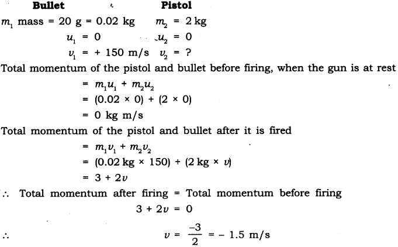
Question 18. Negative sign indicates that the direction in which the pistol would recoil is opposite to that of bullet.
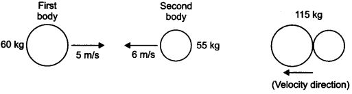
Two bodies as shown in the figure collide with each other and join thereafter. With what velocity will they move after combining together?
Answer:
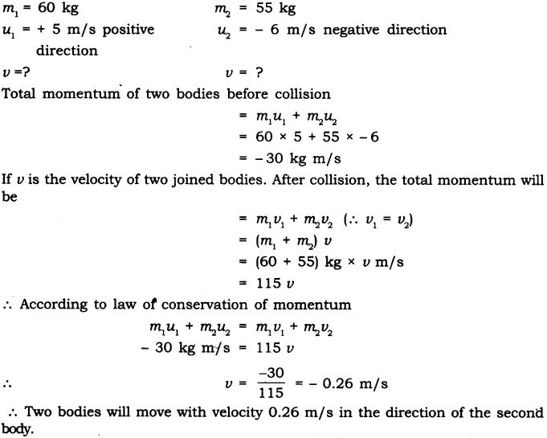
NCERT Solutions for Class 9 Science Chapter 9 Long Answer Type Questions
Question 1. Explain Newton’s second law of motion and with the help of an example show how it is used in sports.
Answer: Newton’s second law of motion: The rate of change of momentum of an object is proportional to the applied unbalanced force in the direction of the force.
Let us assume:
Object of mass m, is moving along a straight line with an initial velocity ‘u’, It is uniformly accelerated to velocity v in time ‘t by the application of force,
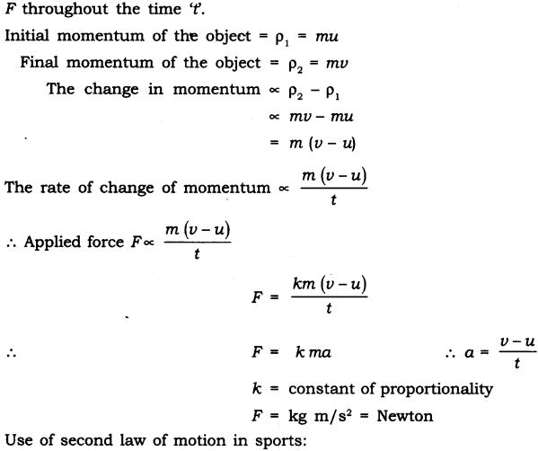
In cricket field, the fielder gradually pulls his hands backward while catching a ball. The fielder catches the ball and gives swing to his hand to increase the time during which the high velocity of the moving ball decreases to zero.
The acceleration of the ball is decreased and therefore the impact of catching the fast moving ball4s reduced.
If not done so, then the fast moving ball will exert large force and may hurt the fielder.
Question 2. State all 3 Newton’s law of motion. Explain inertia and momentum.
Answer:
Newton’s I law of motion: An object remains in a state of rest or of uniform motion in a straight line unless acted upon by an external unbalanced force.
Newton’s II law of motion: The rate of change of momentum of an object is proportional to the applied unbalanced force in the direction of the-force.
Newton’s III law of motion: To every action, there is an equal and opposite reaction and they act on two different bodies.
Inertia: The natural tendency of an object to resist a change in their state of rest or of uniform motion is called inertia.
Momentum: The momentum of an object is the product of its mass and velocity and has the same direction as that of the velocity. Its S.I. unit is kgm/s. p = m x v
Question 3. Define force. Give its unit and define it. What are different types forces?
Answer: Force: It is a push or pull on an object that produces acceleration in the body on which it acts.
A force can do 3 things on a body
(a) It can change the speed of a body.
(b) It can change the direction of motion of a body.
(c) It can change the shape of the body.
The S.I. unit of force is Newton.
Newton: A force of one Newton produces an acceleration of 1 m/s2 on an object of mass 1 kg.
1N = 1kg m/s2
Types of forces:
- Balanced force: When the forces acting on a body from the opposite direction do not change the state of rest or of motion of an object, such forces are called balanced forces.
- Unbalanced force: When two opposite forces acting on a body move a body in the direction of the greater force or change the state of rest, such forces are called as unbalanced force.
- Frictional force: The force that always opposes the motion of object is called force of friction.
Question 4. What is inertia? Explain different types of inertia. Give 3 examples in daily life which shows inertia.
Answer:
Inertia: The natural tendency of an object to resist change in their state of rest or of motion is called inertia.
The mass of an object is a measure of its inertia. Its S.I. unit is kg.
Types of inertia:
Inertia of rest: The object at rest will continue to remain at rest unless acted upon by an external unbalanced force.
Inertia of motion: The object in the state of uniform motion will continue to remain in motion with same speed and direction unless it is acted upon by an external unbalanced force. .
Three examples of inertia in daily life are:
- When we are travelling in a vehicle and sudden brakes are .applied we tend to fall forward.
- When we shake the branch of a tree vigorously, leaves fall down.
- If we want to remove the dust from carpet we beat the carpet so that dust fall down.
NCERT Solutions for Class 9 Science Chapter 9 Activity-Based Questions
Question 1.
- Make a pile of similar carom coins on a table, as shown in the figure.
- Attempt a sharp horizontal hit at the bottom of the pile using another carom coin or striker. If the hit is strong enough the bottom coin moves out quickly. Once the lowest coin is removed, the inertia of the other coins makes them ‘fall’ vertically on the table.
Inertia: It is the tendency of a body to maintain its state of rest or of motion.
Question 2.
- Set a five-rupees coin on a stiff card covering an empty glass tumbler standing on a table as shown in the figure.
- Give the card a sharp horizontal flick with a finger. If we do it fast then the card shoots away, allowing the coin to fall vertically into the glass tumbler due to its inertia.
Answer: The force applied on the card due to flicking changes the inertia of the card but the coin resist a change and stay at the rest i.e. inertia of rest and due to gravity falls down in the tumbler.
Question 3.
- Place a water-filled tumbler on a tray.
- Hold the tray and turn around as fast as you can.
- We observe that the water spills. Why?
Answer: The water-filled in tumbler and tray are at rest. On moving/turning around the tray at faster speed the water spills because the tray and the tumbler comes into motion while the water in the tumbler remain at inertia of rest.
Question 4.
- Request two children to stand on two separate carts as shown on the next page.
- Give them a bag full of sand or some other heavy object. Ask them to play a game of catch with the bag.
- Does each of them receive an instantaneous reaction as a result of throwing the sand bag (action)?
- You can paint a white line on cartwheels to observe the motion of the two carts when the children throw the bag towards each other.
Answer. Yes, in this case each of them receives an instantaneous reaction as a result of throwing the sand bag.
This activity explain Newton’s III law of motion i.e., the force is exerted forward in throwing the bag full of sand and the person who is throwing it gets pushed backward.
Question 5.
- Take a big rubber balloon and inflate it fully. Tie its neck using a thread. Also using adhesive tape, fix a straw on the surface of this balloon.
- Pass a thread through the straw and hold one end of the thread in your hand or fix it on the wall.
- Ask your friend to hold the other end of the thread or fix it on a wall at some distance. The arrangement is shown in the figure below.
- Now remove the thread tied on the neck of balloon. Let the air escape from the mouth of the balloon.
- Observe the direction in which the straw moves.
Observation:
When the air escapes out from the balloon the straw moves in the opposite direction of the air moved out of the balloon.
This activity explains the law of conservation of momentum and Newton’s III law of motion.
Initial momentum = Final momentum
Question 6.
- Take a test tube of good quality glass material and put a small amount of water in it. Place a stop cork at the mouth of it.
- Now suspend the test tube horizontally by two strings or wires as shown in the figure on next page.
- Heat the test tube with a burner until water vaporises and the cork blows out.
- Observe that the test tube recoils in the direction opposite to the direction of the cork.
Observation:
The cork is pushed out in forward direction by the hot steam. The test tube is pushed in the backward direction.
It explain Newton’s III law of motion and conservation of momentum.
NCERT Solutions for Class 9 Science Chapter 9 Value-Based Questions
Question 1. Class V students were playing cricket with the cork hall in the school campus. Charu a senior student told them about the accidents that can occur due to cork ball in the campus and also advised them to bring soft cosco ball to play the game.
(a) Why it was safe to play with soft ball and not with hard cork ball?
(b) A player pulls his hands backwards after holding the ball shot at high speed. Why?
(c) What value of Charu is seen in this act?
Answer:
(a) The soft ball will have less inertia as compared to the heavy ball and it would not hurt the players.
(b) By pulling the hand backwards it reduces the force exerted by the ball on hands.
(c) Charu showed the value of being responsible and helpful by nature.
Question 2. Saksham saw his karate expert friend breaking a slate. He tried to break the slate but Saksham’s friend stopped him from doing so and told him that it would hurt, one needs lot of practice in doing so.
(a) How can a karate expert break the slate without any injury to his hand?
(b) What is Newton’s third law of motion?
(c) What value of Saksham’s friend, is seen in the above case?
Answer:
(a) A karate player applies the blow with large velocity in a very short interval of time on the slate, therefore large force is exerted on the slate and it breaks.
(b) To every action there is an equal and opposite reaction, both act on different bodies.
Saksham’s friend showed the value of being responsible and caring friend.